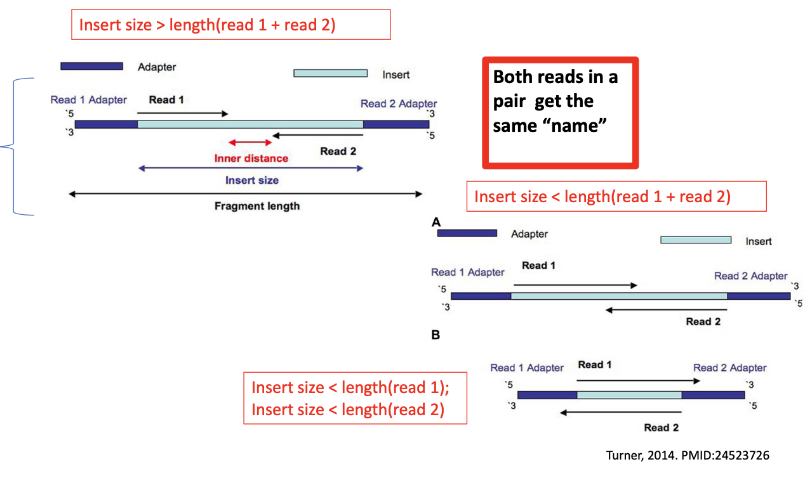
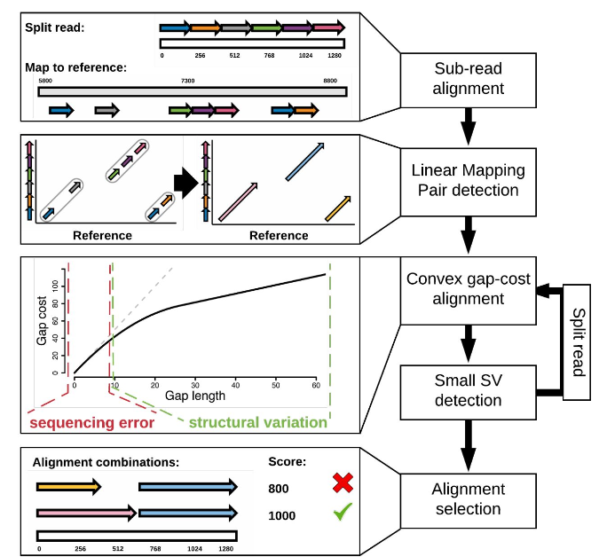

Manual
Module 2: Reads alignment
This module covers how raw sequencing reads are aligned to a reference genome using modern tools and algorithms
Sequence alignment in NGS is the process of determining the most likely source of the observed DNA sequencing read within the reference genome sequence.

A reference genome is a digital version of a species’ DNA used as a standard for comparison. When scientists sequence DNA from a person or organism, they compare the pieces they get (called “reads”) to this reference to figure out where they come from and what they might mean. The reference is stored as a big file (like GRCh38.fa for humans) that contains the full DNA sequence of that species. 
For DNA, aligning short reads to a reference allows researchers to identify variations, such as single nucleotide polymorphisms (SNPs), by comparing the sequence of an individual’s DNA to the standard genome. This helps detect mutations or inherited traits. In RNA sequencing (RNA-seq), alignment reveals which genes are being expressed and how much, by mapping RNA reads back to the genome or transcriptome. This makes it possible to measure transcript abundance and study gene activity under different conditions. Overall, the reference genome acts like a scaffold that gives meaning to raw sequencing data.
Although sequencing technologies have advanced dramatically, the core principles of sequence alignment have remained largely unchanged since the 1980s. Tools like BLAST (Basic Local Alignment Search Tool) introduced the foundational “seed and extend” strategy, where short matching subsequences (typically ~10 bp) from a query are used to identify candidate regions in a larger database, which are then extended to find high-scoring alignments. In the context of next-generation sequencing (NGS), alignment is performed at the nucleotide level, often between closely related sequences (e.g., human-to-human or microbial strains), which allows algorithms to assume a limited number of mismatches and optimize performance accordingly. Alignment tools also distinguish between gapped and ungapped approaches, with gapped alignment being essential for detecting insertions and deletions (indels). While the methods are conceptually similar to early tools, NGS has vastly increased the scale and complexity of alignment, requiring highly efficient algorithms to process millions to billions of short reads rapidly.
Hash Table-Based Alignment

Hash Table-Based Alignment is a common approach in next-generation sequencing for mapping short reads to a reference genome. It relies on indexing short, fixed-length nucleotide sequences called k-mers (e.g., a 31-mer is a string of 31 nucleotides). The algorithm typically begins by building a hash table index of all possible k-mers in the reference genome along with their genomic positions—a process that can generate several gigabytes of data for the human genome. During alignment, each sequencing read is broken into k-mers, and the index is used to rapidly find candidate mapping positions (the seed phase). The location with the most matching k-mers is selected, and a Smith-Waterman alignment is then performed to fine-tune the placement of the read. The final alignments are typically saved in formats like BAM. Tools differ in whether they hash the reads or the reference: MAQ, ELAND, ZOOM, and SHRiMP hash the reads (offering flexibility but variable memory usage), while SOAP, BFAST, and MOSAIK hash the reference, providing more consistent memory usage.
Suffix/Prefix Tree-Based Aligners
Suffix/Prefix Tree-Based Aligners use specialized data structures to enable rapid and efficient string matching during sequence alignment. A common structure is the suffix tree (or simply tree), which stores all possible suffixes (or prefixes) of a reference genome, allowing for fast lookup of sequence patterns. Modern implementations typically rely on a more compact and memory-efficient structure known as the FM-index, which is built on the Burrows-Wheeler Transform (BWT). FM-index-based aligners significantly reduce memory usage while maintaining high alignment speed. Tools such as MUMmer, BWA, and Bowtie use these methods to quickly identify candidate mapping locations. However, they still require a final local alignment step (e.g., Smith-Waterman) to accurately map reads and account for mismatches and small insertions or deletions.
The Smith-Waterman Algorithm

Local Alignment using the Smith-Waterman Algorithm (developed in 1981) is a crucial step in refining read placement on a reference genome. Once a rough location for a read is identified through seeding or indexing methods, Smith-Waterman is used to compute the optimal pairwise alignment between the read and the reference in that region. This alignment helps determine the precise structure of the match, including the CIGAR string, which encodes matches, mismatches, insertions, and deletions. While highly accurate, the algorithm is computationally intensive, so it is typically applied only to a subset of reads—those that cannot be exactly matched during the initial mapping. This step is particularly important for accurately detecting small insertions and deletions (indels) that simpler matching approaches may miss.

The fragment length refers to the full DNA segment between the sequencing adapters, while the insert size is the distance between the start of Read 1 and the end of Read 2, excluding adapters. The inner distance is the part of the insert not covered by either read. When the insert size is larger than the combined length of both reads, Read 1 and Read 2 do not overlap (top example). When the insert size is smaller, the reads can overlap or even fully span the fragment, causing adapter sequences to appear within the reads (examples A and B). Regardless of layout, both reads in a pair share the same name in sequence files, which allows them to be associated during alignment and analysis.
Glossary
Fragment Length: The total length of the DNA molecule from adapter to adapter.
Insert Size: The distance between the start of Read 1 and the end of Read 2 (excluding adapter sequences).
Inner Distance: The portion of the insert that is not covered by either read; relevant in estimating library insert size.
Read 1 / Read 2: The two ends of the same DNA fragment that are sequenced separately. Read 1 typically starts at the 5′ end of the fragment. Read 2 starts from the opposite end (3′).
Adapter: Synthetic DNA sequences ligated to fragment ends to allow for sequencing; sometimes appear in reads when insert size is small.
Same Name: Both reads in a pair receive the same identifier in FASTQ or BAM files, enabling correct pairing during alignment.
Mapping qualities
Mapping quality is a score that reflects how confident the aligner is that a sequencing read has been correctly placed on the reference genome. This is especially important because genomes contain many repetitive elements, such as transposable elements (which make up 40–50% of vertebrate genomes), low-complexity regions, and reference gaps or errors. These features can make it difficult to determine the true origin of a read. Mapping quality is usually expressed as a Phred-scaled score, where higher values indicate greater confidence: for example, Q10 means a 1 in 10 chance of incorrect alignment (90% accuracy), Q20 means 1 in 100 (99%), and Q30 means 1 in 1000 (99.9%). A score of Q0 indicates no confidence at all. Paired-end sequencing improves mapping accuracy because if one read maps to a repetitive region and its mate maps to a unique sequence, the pair can still be confidently aligned, leading to a higher overall mapping quality. For this reason, paired-end reads are generally preferred for complex genomes.
Alignment limitations
Alignment Limitations arise from both the characteristics of sequencing reads and the complexity of the genome being analyzed. Short reads are particularly challenging to align with confidence, especially in low-complexity genomes where repetitive or biased sequence content—such as the AT-rich genome of Plasmodium (malaria)—creates ambiguity. Alignment around insertions and deletions (indels) is another known issue: aligners may misplace reads near true indels, falsely calling single nucleotide polymorphisms (SNPs) due to scoring biases that favor mismatches over gaps. To address this, some tools perform a local realignment step on the BAM file to correct misalignments near indels. Additionally, high-density SNP regions can challenge seed-and-extend aligners, which often limit the number of mismatches allowed in the seed region (e.g., Maq allows at most two mismatches in the first 28 bases). Burrows-Wheeler Transform (BWT)-based aligners are more efficient but perform best with low sequence divergence, limiting their effectiveness for highly variable or divergent genomes.
The challenges of sequence alignment in highly divergent genomic regions


The images above illustrate the challenges of aligning reads in regions with high sequence divergence and structural variation. Such areas can lead to poor mapping quality and inaccurate variant detection, highlighting the limitations of standard alignment tools when dealing with complex, strain-specific genomic differences.
Long-read sequencing
Long-read sequencing technologies, such as those from Oxford Nanopore and Pacific Biosciences, enable the sequencing of large DNA fragments—typically 10–20 kilobases in length. These long reads are especially useful for resolving repetitive regions and structural variants, as they often span entire transposable elements that short reads cannot. However, long-read sequencing introduces new challenges: the reads are more error-prone, with error rates up to 10%, making accurate alignment more difficult and requiring specialized algorithms for effective analysis.

Structural variants, such as deletions and inversions, can cause challenges for short-read aligners like BWA-MEM. In the case of a deletion (left), reads fail to align properly across the missing region, often resulting in soft-clipping, mismatches, or gaps in coverage. For an inversion (right), alignment is disrupted due to the reversed orientation of the sequence, leading to a dense cluster of mismatches and misaligned bases.
NGMLR (Next-Generation Mapping and Long Read)

NGMLR (Next-Generation Mapping and Long Read) is an aligner specifically designed for handling the unique challenges of long-read sequencing data. It uses a convex gap-cost scoring model, which means that the penalty for extending an insertion or deletion (indel) decreases as the indel gets longer. This approach is well-suited for long reads, which often contain large structural variants. Unlike traditional aligners that over-penalize long gaps, NGMLR is optimized to more accurately align reads containing large insertions, deletions, and complex rearrangements commonly found in long-read datasets.
The Data production workflow

The Data production workflow begins with sequencing instruments generating raw FASTQ files from individual lanes or plexes. These reads are then aligned to a reference genome using tools like BWA or SMALT, producing BAM files that represent aligned read data. Next, the BAM improvement step enhances data quality through operations such as sorting, duplicate marking, and base quality recalibration. Improved BAMs are merged at the library level, combining data from multiple lanes of the same library, and then at the sample/platform level, integrating multiple libraries or sequencing runs from the same sample.
Library Duplicates
Library duplicates are identical DNA fragments that arise during the PCR amplification step of library preparation in second-generation sequencing platforms, which are not single-molecule technologies. These duplicates can inflate read depth and potentially lead to false SNP calls, as they appear to support variants more strongly than they should. In high-quality libraries, duplicate rates are typically low—less than 5%. To address this, reads are first aligned to a reference genome, and duplicate read-pairs—those that map to the same outer coordinates—are identified and either removed or marked using tools such as Samtools (rmdup) or GATK’s MarkDuplicates. While PCR-free protocols can minimize duplicates, they require more input DNA, making them less feasible in some experimental contexts. Proper handling of duplicates is crucial for ensuring accurate variant calling and data interpretation.
Duplicates and false SNPs

Identical or nearly identical sequences stack at the same genomic position, artificially inflating read depth. In the image above, the red box marks a site where duplicates introduce an apparent variant, potentially misinterpreted as a true SNP. Proper duplicate removal is essential to avoid such false-positive variant calls in downstream analysis.
IT costs of NGS
Next-generation sequencing (NGS) platforms like NextSeq can generate up to ~800 million reads or 160 Gbp per run, producing massive data volumes that are computationally intensive to process. Aligning a single lane of reads on one computer can take a long time, so parallel computing is used to speed up the workflow. One approach is to split the FASTQ files into smaller chunks (e.g., 1 Gbp), align them independently—each taking ~8 hours with BWA—and then merge the resulting BAM files using tools like samtools merge. Alternatively, users can leverage multiple CPU cores on a single machine by simply specifying the number of threads (e.g., bwa mem -t). Estimating IT requirements involves two main components: compute, which relates to CPU time needed for analysis (estimated at 20–40 CPU hours per Gbp), and storage, which can amount to 4–5 bytes per base pair sequenced when accounting for raw, processed, and backup data. For example, an experiment with 10 HiSeq lanes would require approximately 3 TB of storage and up to 24,000 CPU hours.